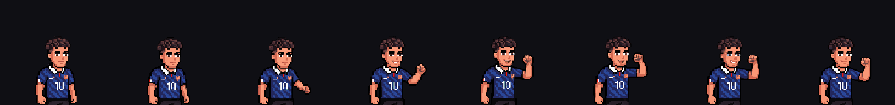
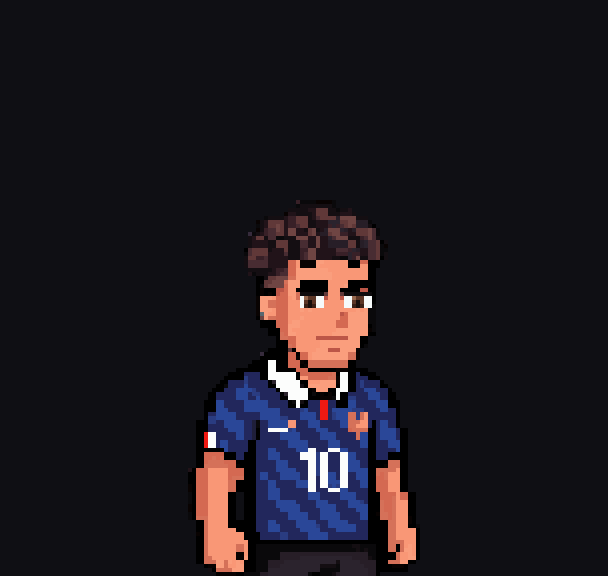
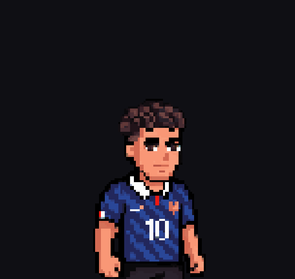
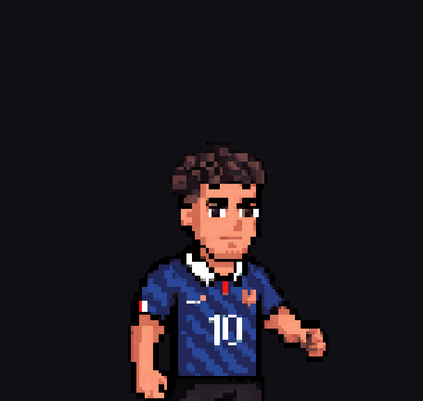
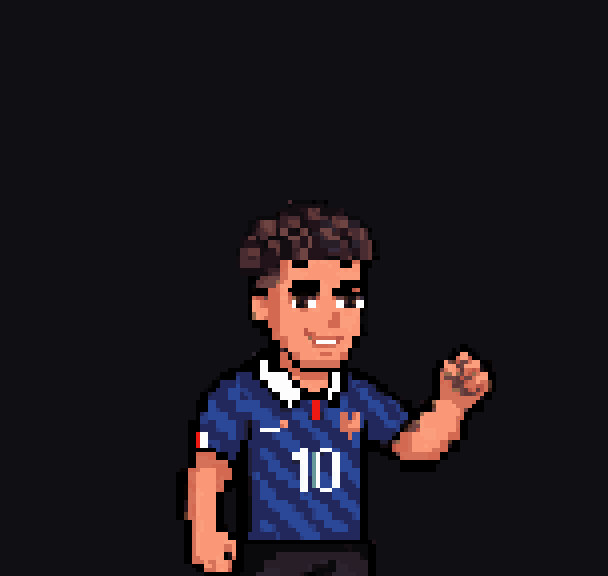
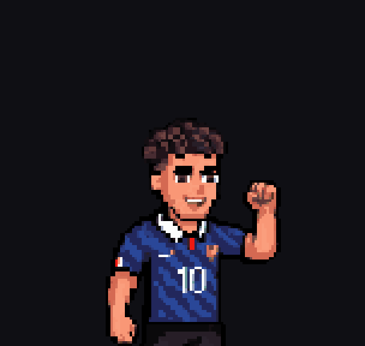
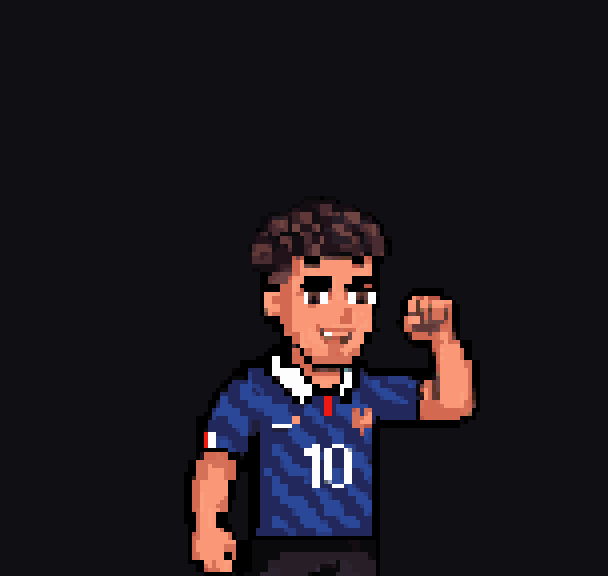
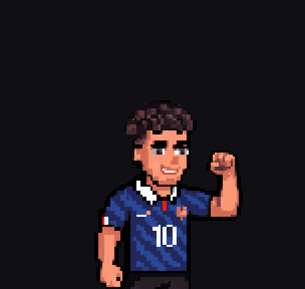
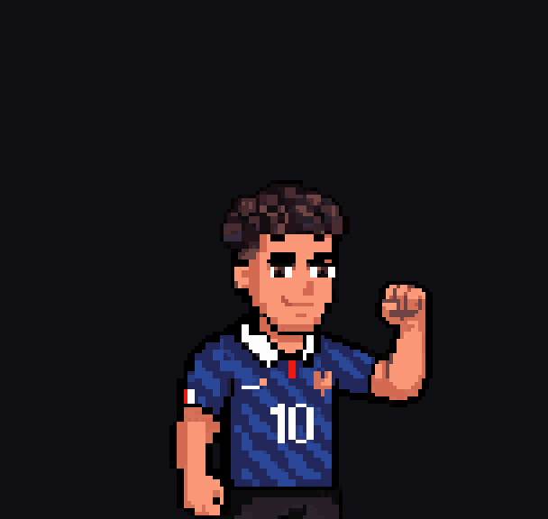

Normal Ryan · 8 complete frames · 12 fps · one-shot
The saved-workout screen used to show Ryan cheering. After the V4
migration it showed him standing, because the V4 catalogue was ten idles and the nine
transformations between them and had no celebration in it. This is that missing clip:
he raises one fist to shoulder height and holds it. It plays once and stays on the last
frame, because the screen it sits on says Workout saved and a fist that goes up
and comes down again reads as a tic rather than a result.
Normal speed
12
12 fps as authored, with the raised fist held — which is what the screen shows most of the time
nbsp;fps as authored
12 fps as authored, with the raised fist held — which is what the screen shows most of the time
mdash; the GIF runs at 12.5, because GIF stores delays in hundredths of a second and 12
12 fps as authored, with the raised fist held — which is what the screen shows most of the time
nbsp;fps is not representable; the app plays the real rate
Neutral, gather, the fist forms at the waist, rises, and holds at shoulder
height, clear of his face.
Slow
Every frame held long enough to read on its own
Both feet stay planted and the legs never move; the floor is locked at the
model sheet's baseline row in all eight frames.
Frame strip
All 8 frames in order

Every frame is a complete authored sprite. Nothing is translated, warped,
patched or assembled — the runtime only advances an index.
Individual frames
Each one has to hold as a still

0 — neutral, the canonical standing body unchanged

1 — settle, the chest begins to lift

2 — the hand closes at the waist

3 — the fist leaves his side

4 — rising, elbow bending

5 — near shoulder height

6 — at height

7 — the authored victory pose, held
How it was made, and what was rejected on the way
Three rolls were thrown away before this one
Pinning the loop closed made the generator invent the peak, and it
drifted badly: a pained grimace on one frame, an open gasping mouth on another, the fist
unclenching into a flat paddle on a third, and the jersey's short sleeves dissolving into
bare shoulders from frame 4 on.
The fix was to author the endpoint first. The raised-fist pose was
drawn as a single still and checked by hand, then the clip was generated as an
interpolation between two known-good frames rather than an open-ended motion. The last
frame lands within 2 pixels of 5191 on that authored pose.
A silhouette clamp was removed. It is the right tool for an idle,
where anything outside the standing outline is a stray. Here it deleted 65 to 183 pixels
a frame — the raised fist itself.
One frame was dropped. The generator drew a blink, cleanly, as two
lash lines. Good art, but a blink in the middle of a fist raise reads as losing the
moment. Removing it leaves the eight frames here and costs no motion.
No aura. Normal is the one form with none authored, and this screen
celebrates as Normal because it holds a workout summary and cannot know which rung the
week earned.